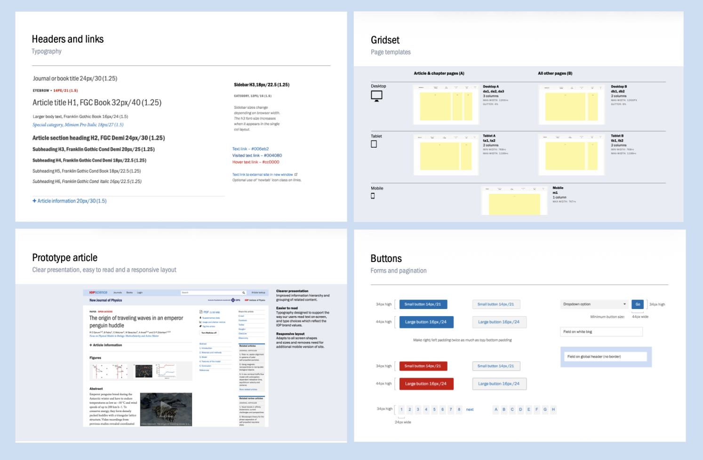
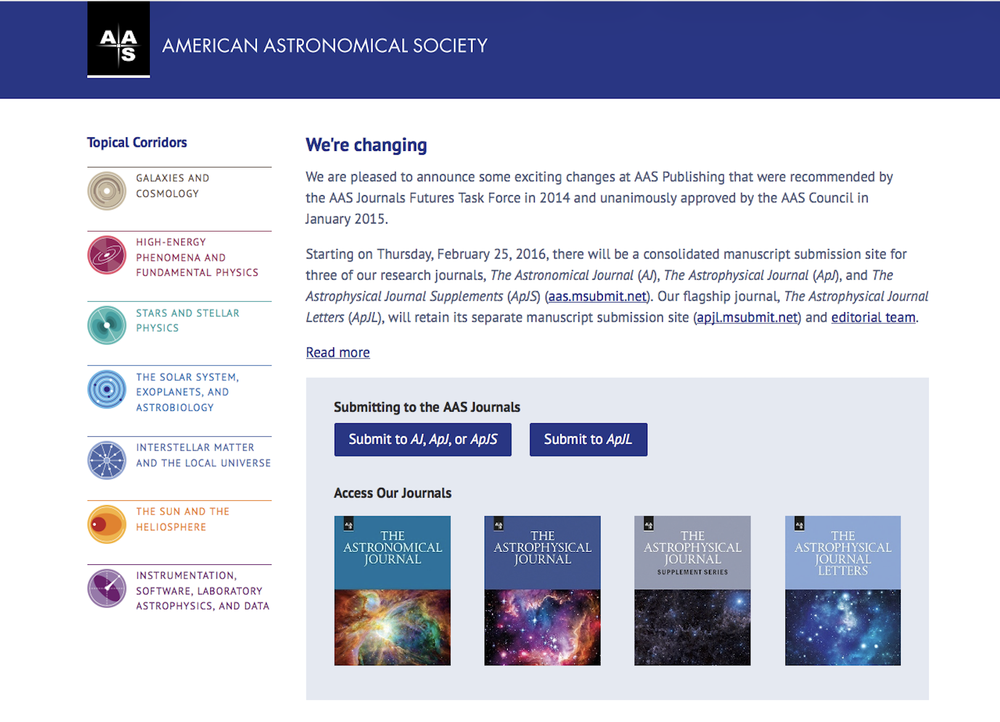
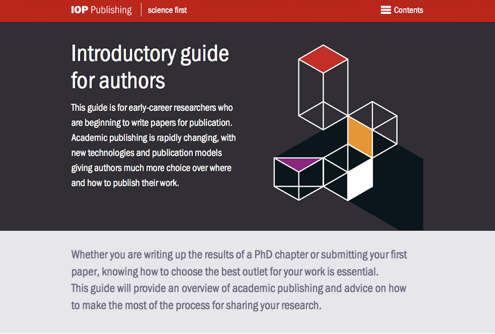
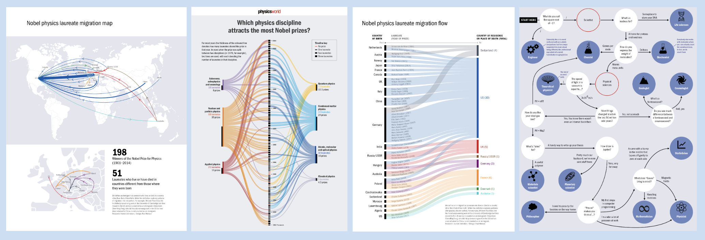

Company and dates: IOP Publishing · Jan 2010 – Oct 2016
Bringing coherence to a complex digital portfolio for an international scientific publisher
IOP Publishing is the publishing arm of the Institute of Physics, a not-for-profit learned society founded in 1874. It publishes over 100 journals, a growing ebooks catalogue and Physics World, a leading science news site, app and magazine, distributing cutting-edge research to scientists and institutions worldwide through its online platform, IOPscience.

The context
When I joined in as the organisation's first UX designer, IOP Publishing's digital product estate was growing. IOPscience, the Physics World website and app, and the IOP.org institutional site each had their own visual languages and interaction patterns, each evolving separately without a unifying design language.
At the same time, researchers and students were increasingly reading and managing their usage on mobile devices, and the existing sites were not responsive. The organisation was also entering a period of significant digital expansion, launching ebooks alongside its established journals programme and investing in mobile.
The challenge was to bring coherence to a broad and technically complex product portfolio, while designing experiences that worked for a demanding global audience of researchers, students, scientists and librarians.
My role
UX Designer, to . Working within a multidisciplinary publishing design studio with a strong brand identity in print, I led end-to-end experience design across IOP Publishing's digital products for over six years.
What I did
Designing across the digital portfolio
I designed and launched a global design system for IOPscience establishing consistent patterns, components and visual standards for the first time. I also led the digital design of Physics World and the IOP.org institutional site, ensuring a coherent user experience across the full portfolio as the organisation's publishing programme expanded.
As well as IOPscience, I worked on the American Astronomical Society (AAS) website, bringing the same standards of clarity and usability to a major partner society's digital presence.



Designing the Physics World app
As IOP Publishing's membership grew in international markets, the need for a high-quality mobile experience became increasingly important. I designed the Physics World app to complement the relaunched digital edition of the magazine, translating the high standards of the print publication into a mobile reading experience that worked for a global audience of physicists and researchers.
The design challenge was to honour the editorial quality and visual identity of a respected print magazine while meeting the conventions and constraints of mobile. The app won Best App and Digital Edition at the Eddie Digital Awards, recognition that reflected the quality of the end result.